In this post (work in progress), I will cluster Podemos forum users according to the graphs around their posts. The idea is to find which groups of users tend to participate (more than the average) in cascades, which ones tend to participate (more than the average) in stars, and son on.
As in the previous post, I will use the threads written on January 2015 on the Reddit subforum of Podemos. The podemos forum (a.k.a subreddit) contains 995 discussion threads that started on January. These threads contain a total of 12912 posts written by 1218 users.
A very natural to represent a conversation thread is a tree where vertices represent posts and edges represent replies from some post to another. Let us see some of the discussions of our dataset:
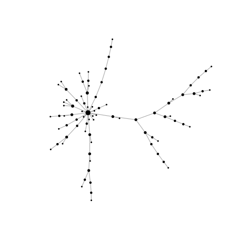 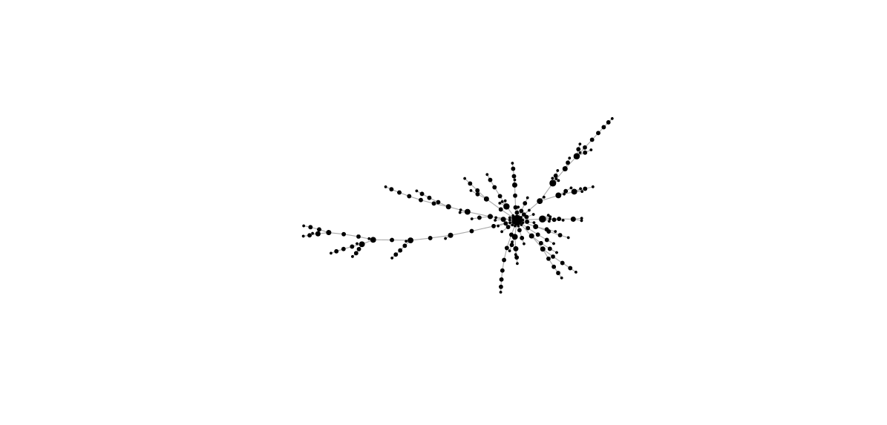 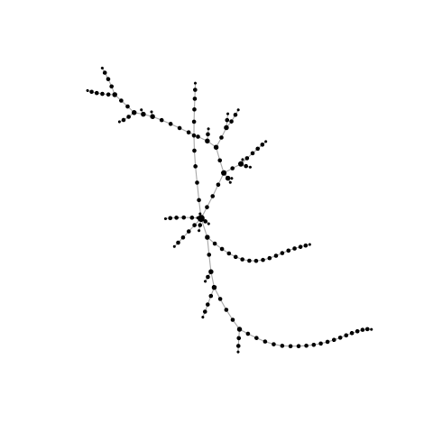
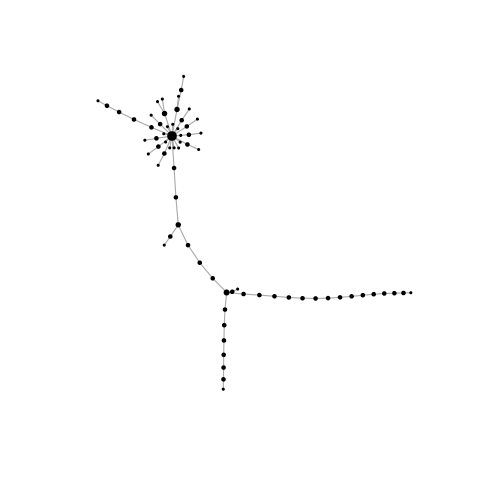 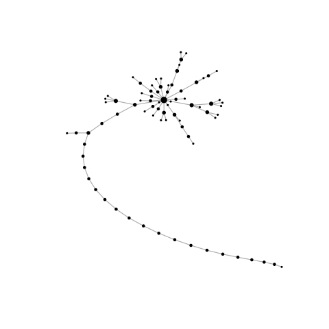 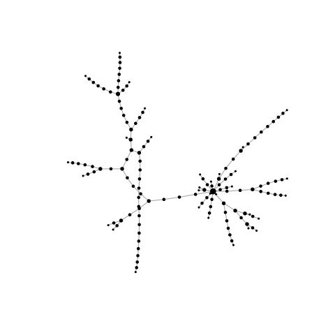
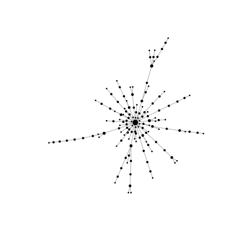 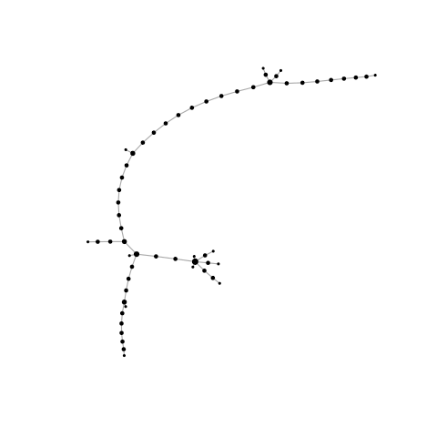 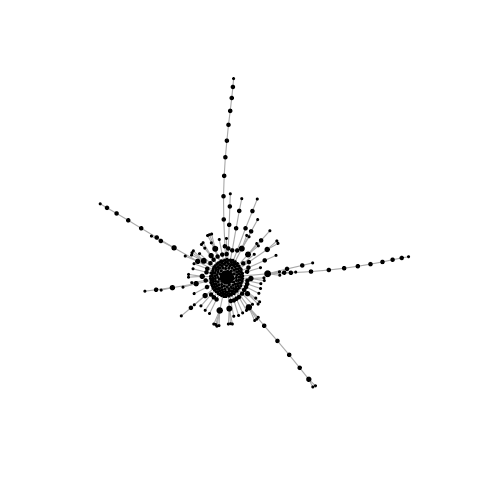
Imagine we take one post \(p\) as well as it neighborhood of posts and we create a graph from that. I will call this subgraph a motif. I would like to count, for every user, the different motifs around their posts given a neighborhood radius \(R\). Unfortunatelly this concept of neighborhood based on distances has an infinite number of possible graphs. Both trees in the below image represent two possible neighborhoods of the red vertex (the white vertex represents the root post of the thread):
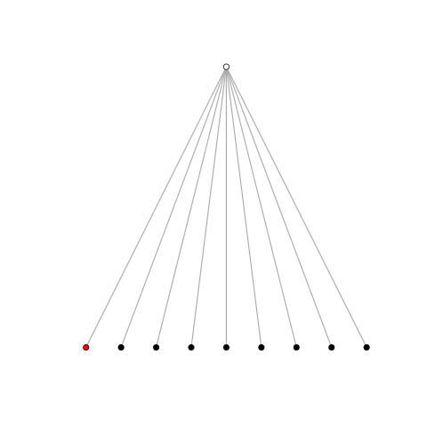 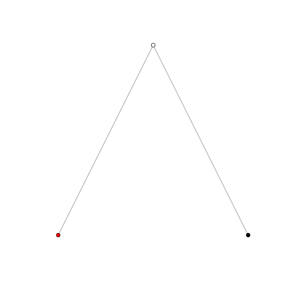
To reduce our space of possible neighborhoods we will introduce the concept of temporal neighborhood: if post $p was written at time \(t\), the temporal neighborhood (of radius \(R\)) of a \(p\) is the set of \(R\) posts in its spacial neighborhood that were written in a time closest to \(t\) (and where closeness is computed as \(|t_i-t|\)) and where the posts in the shortest path from each neighbour and \(p\) belong also to the temporal neighborhood.
With this in mind, we count the temporal neighborhoods of every user’s posts. To make it funnier (and more fine-grained), we will also put a color (white) on the root post. For a spacial neighborhood of radius \(1\) and a temporal neighborhood of radius \(4\) we obtain:
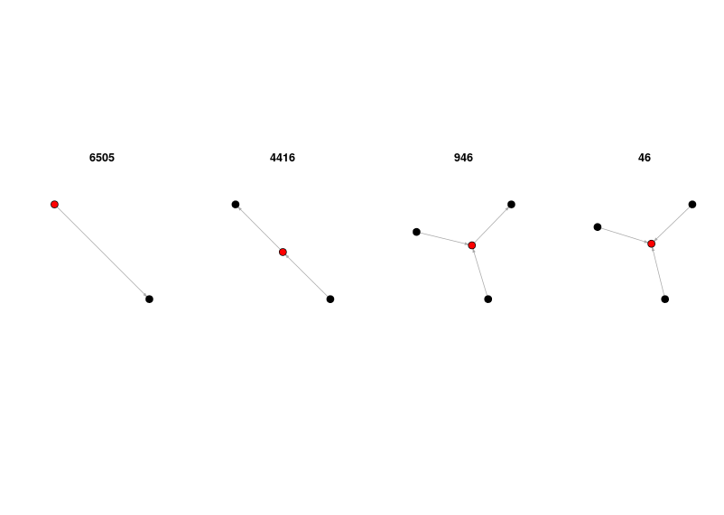
We can play the the spacial and the temporal radius. Let’s see what happens if we set both radius to \(4\):
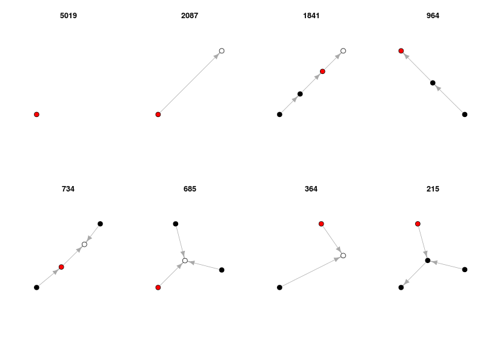
where I named the neighborhoods to help the intuition.
(Question: how come spot is the most frequent? How is it possible to have no neighbors at all? Or what might be wrong?)
Given the neighborhoods in which each user participates, we will analyze whether there exists different types of users or all users look similar. Since
Since we want to make the analyse independent of the number of posts, we will normalize each user feature vector so that features indicate the percentage of posts in this kind of neighborhood. Moreover, some neighborhoods are much more common than others due to the nature of the forums. Thus, we normalize and scale the features so that every feature has a global mean 0 and variance 1. The features represent now z-scores, that is, how many standard deviations is this user feature away from the mean.
We will use a simple k-means to find the clusters. To decide the number of clusters, we run k-means for \(k=2,...,10\) clusters and looked at the Within-Cluster Sum of Squares.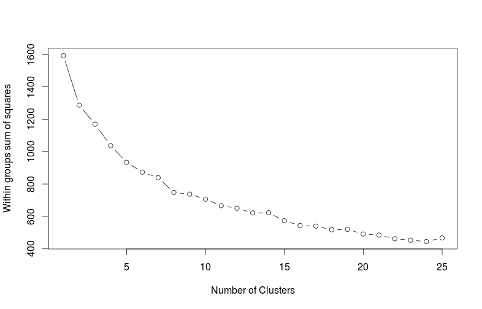
This plot suggests a \(k\) between 3 and 5. I will choose 5 to keep thinks simple. I run the k-means and then plot the scatter matrix of evert pair of variables, where colors correspond to the clusters.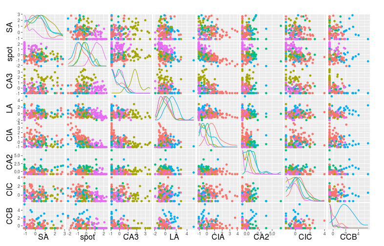
To see it more clearly, let’s plot a PCA projection over the first two components: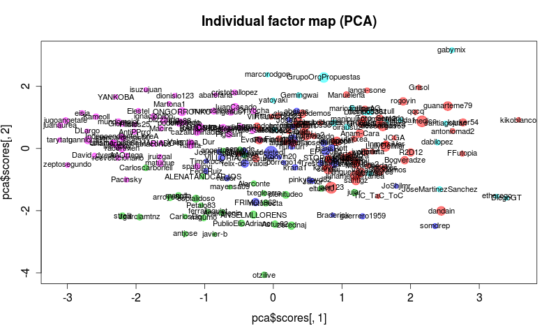
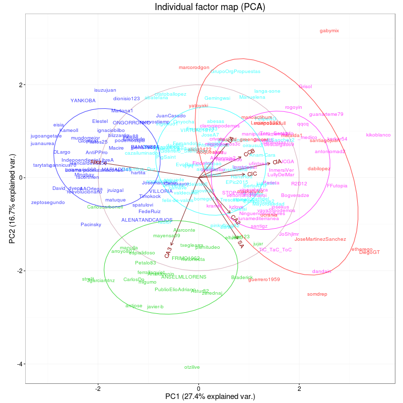
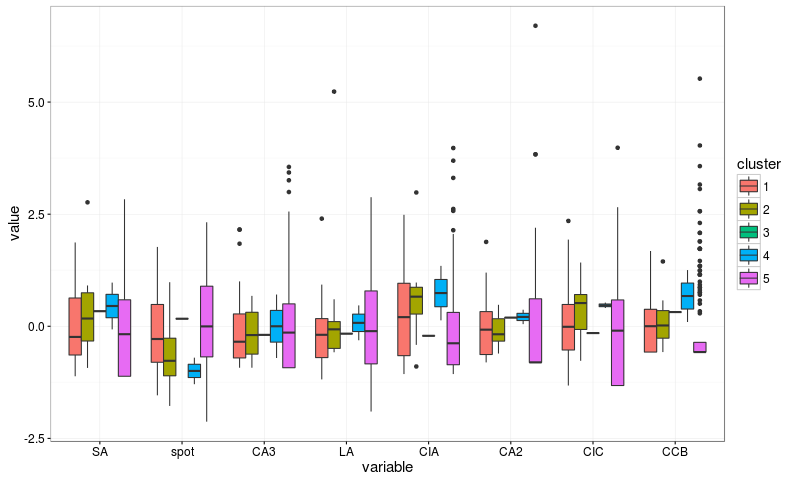
Let’s now formalize the detected groups:
Once we assigned a role to every user, let’s see what is the proportion of roles in every thread. We will
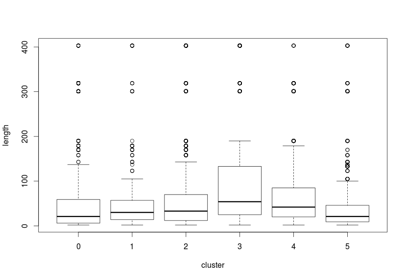